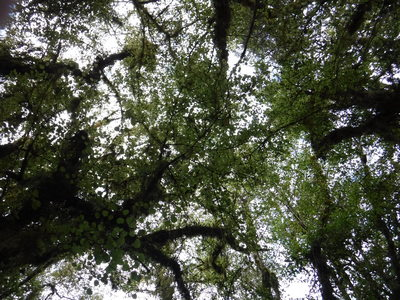
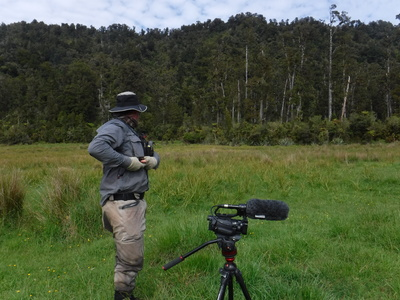
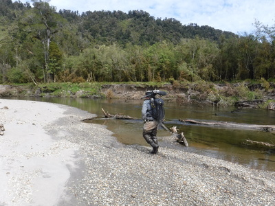
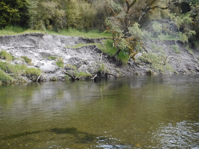
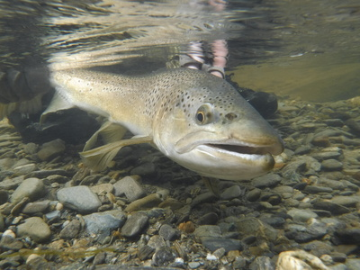

釣行日誌 ＮＺ編 「一期一会の旅：A Sentimental Journey」
Chamois ：シャモアを捜して森の中へ
11-23(FRI)-2
最初の１尾をキャッチしてから対岸へ上がり、草むらの中を川から少し離れて上流へ向かう。遠くに森が見えたあたりでディーンが、
「これから Chamois の撮影をしたいから、少しそこの林に隠れて待っててくれるか？」
と言うので、デイパックもロッドも置いて、地面にドタンと横たわる。ディーンは重い撮影機材を軽々と担ぎ、抜き足差し足で気配を殺しながら森へと向かった。
Chamois ：シャモアというのは、ウィキペディアによると
体長110-130cm。肩高70-85cm。体重25-62kg。頭部から咽頭部にかけての体毛は白く、眼から側頭部にかけて黒い筋模様が入る。オス、メス共に最大でも20cm程の先端が鈎状になる黒く短い角を持つ。
シャモアは、1907年にオーストリア帝国皇帝フランツ・ヨーゼフ1世によってニュージーランドに贈られた。初めはクック山に放され、徐々に南島全域に広がっていった。現地ではしばしばChamyと呼ばれる。
ニュージーランドではシャモアの狩りは規制されておらず、ニュージーランド独自の生態系を守る為に、むしろ政府により奨励されている。
ニュージーランドのシャモアはヨーロッパの同年齢のものよりも20%程度体重が少ないが、これは餌が限られているためだと考えられている。しかし、角の長さはヨーロッパの最大のものにも尾敵し得る。
とあり、ニホンカモシカくらいの感じで角のある動物のようだ。
林の中に横たわり、頭上の樹冠を眺めていると、どこからか野鳥、 Tui だろうか？ の美しい鳴き声が聞こえてきた。凶悪なサンドフライは今日も姿を見せず、平和なひとときを堪能した。

15分ほどウトウトしていると、ディーンが呼ぶ声がした。起き上がって荷物を背負い、ロッドを持って林から出てみると、ビデオカメラの傍らに彼がいた。聞けば、牧草地と森林との境界あたりで４頭のシャモアを発見して撮影に挑んだが、少し撮したところで何とか言う鳥が大声で鳴いたために警戒心の強いシャモアたちはいっせいに森の中に逃げ込んでしまったそうだ。

そりゃ残念だったねと、彼の労をねぎらい、再び遡行が始まった。しかしあの重いバックパックに加えてさらにビデオ＋三脚を担いで行軍するディーンは本当にパワフルだなぁと感心した。

時折流れの中を歩いたりして、ふと気付くとウェーダーの中、しかも両足に水が浸入して靴下が濡れ、非常に心地悪い。出発前に穴は補修しており、昨日は何ともなかったのだ。穴が空いたのなら左右どちらかになるだろうが、昨日の長時間歩行による疲労破壊！で裏地の防水シームテープが弱くなったのかも知れなかった。全面的な浸水でどうしようもないので、中がビシャビシャと濡れたシューズで遡行を続ける。
川の右岸側の流心でディーンがまた１尾見つけた。流木脇の、比較的浅い位置で定位しているそうだ。

昼近くとなり、気温も暖かくなっていたのでドライのシケーダで行こう、と彼がフライボックスから緑色のフォーム・シケーダを取り出して結んでくれる。ブリントさんが考案した秘伝の、やや小ぶりなシケーダである。８年前に僕が巻いてきた Clarks Cicada よりも２回りほど小さい。フックは#8ほどだろうか。
またしても何も見えないので、ディーンの指示通りの位置へとシケーダを振り込む。数回の修正指示の後、良いレーンにセミフライが乗り、50cmほど流れた後に丸っこい鼻先が水面を割ってゆっくり咥えた。
『ようし！』
しっかり合わせると、グイッと魚の重みがロッドに乗り、ブラウンの瞬間的な疾走が始まる。行方の下流側には幸いにして流倒木の塊は無かったので余裕を持って鱒をあしらう。右手のラインが緩むことだけは注意した。浅瀬に寄せて来てからディーンの熟練したランディング。
「よぉ～しっ！」
「Well done! 良くやった！」
ガシッと握手をして、ネットの中の鱒を休ませ、リリース前に水中写真を撮す。この１尾も下顎がしゃくれかかった雄のようだった。

釣行日誌ＮＺ編 目次へ
サイトマップ
ホームへ
お問い合わせ